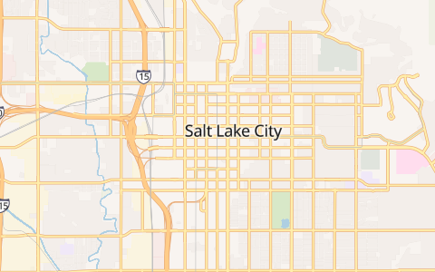
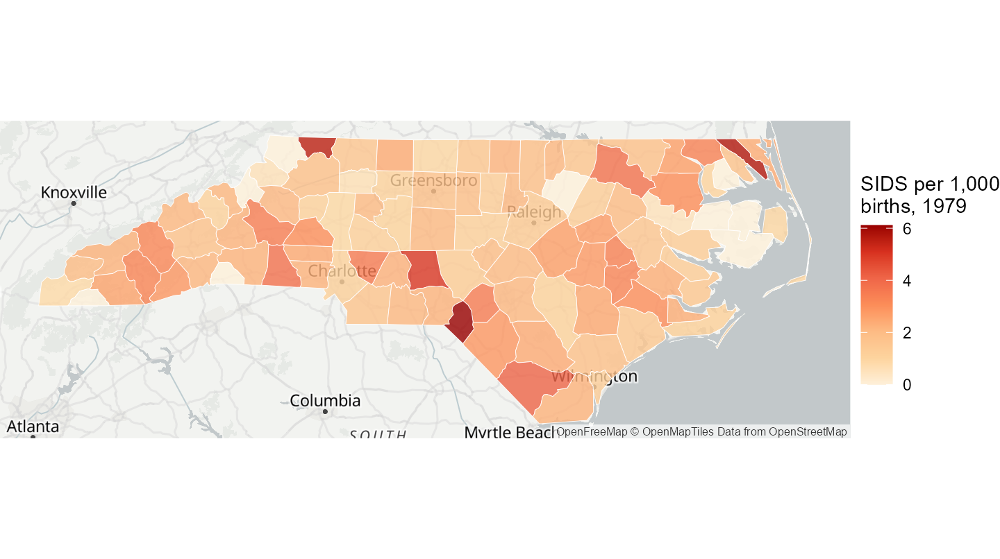
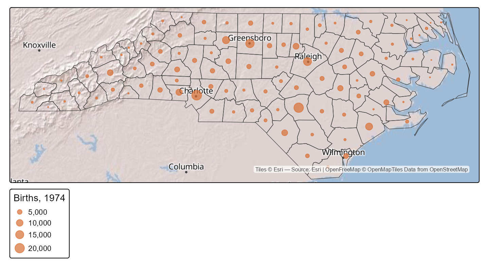
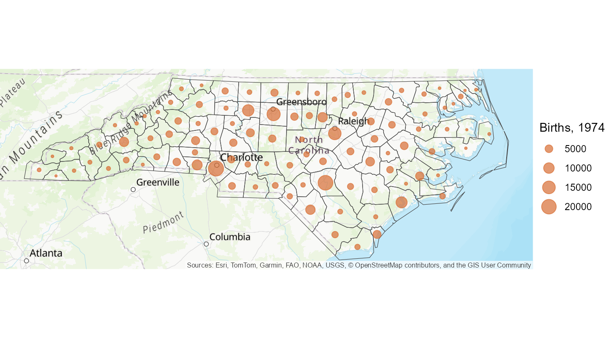

basemapper renders MapLibre GL basemaps headlessly, with a Rust core: no browser, GPU, display server or GDAL. Vector styles are drawn by a CPU port of MapLibre GL JS, tested pixel by pixel against it. Get PNG, SVG or pixels, or a basemap under your ggplot2, tmap, matplotlib and plotnine plots, from R, Python or Rust.

basemapper is installed from GitHub for now. Each package compiles the Rust core, so you need:
rust works too)pak::pak("ar-puuk/basemapper/r-basemapper")remotes::install_github("ar-puuk/basemapper", subdir = "r-basemapper")
devtools::install_github("ar-puuk/basemapper", subdir = "r-basemapper")
Suggests ggplot2 and tmap for the plot layers. Get started in R →
pip install "basemapper @ git+https://github.com/ar-puuk/basemapper#subdirectory=py-basemapper"uv add "basemapper @ git+https://github.com/ar-puuk/basemapper#subdirectory=py-basemapper"# conda-forge gives the dependencies and the Rust toolchain; pip builds basemapper conda create -n basemapper -c conda-forge python numpy pyproj matplotlib xarray rust pip conda activate basemapper pip install "basemapper @ git+https://github.com/ar-puuk/basemapper#subdirectory=py-basemapper"
Needs numpy, pyproj, matplotlib and xarray; plotnine for geom_basemap(). Get started in Python →
[dependencies]
basemapper-core = { git = "https://github.com/ar-puuk/basemapper" }cargo add basemapper-core --git https://github.com/ar-puuk/basemapper
The crate the R and Python packages are built on. Rust guide →
The same functions and arguments in R, Python and Rust. The map is the output of this code: every example on these pages is run when the documentation is built.
library(basemapper) m <- basemap("OpenFreeMap.Positron", 720, 405, center = c(-111.8887, 40.7556), zoom = 12.4) m # shows the map in a document render_png(m, path = "slc.png") render_svg(m, path = "slc.svg") # paths and editable text get_attribution(m)
import basemapper as bm m = bm.basemap("OpenFreeMap.Positron", 720, 405, center=(-111.8887, 40.7556), zoom=12.4) m # shows the map in a notebook m.render_png("slc.png") m.render_svg("slc.svg") # paths and editable text m.get_attribution()
use basemapper_core::providers::{basemap_provider, ProviderOptions}; use basemapper_core::Basemap; let style = basemap_provider("OpenFreeMap.Positron", &ProviderOptions::default())?; let m = Basemap::new(style) .size(720, 405) .center(-111.8887, 40.7556) .zoom(12.4); m.render_png(Some(Path::new("slc.png")))?; m.get_attribution()?;
Raster tiles are images; vector tiles are geometry styled on the fly, as MapLibre does. Either renders to a PNG, or to an SVG with paths, editable text and embedded fonts (raster tiles embedded as images).




The plot layers render when the plot is drawn, for its extent and at the output resolution, in any coordinate system, and credit the provider in the corner.

geom_basemap(). R plots
tm_basemap(). R plots
matplotlib's add_basemap() and plotnine's
geom_basemap() do the same in Python:
Python plots.
Draw several styles as one map, drop labels, or keep features by what they show: water, parks, roads and more.

Stacking, labels and features (R) · (Python) · every basemap in the catalogue
A PMTiles archive is a whole tileset in one file, read over HTTP range requests or from disk, with no tile server. Raster archives draw as they are; vector archives take any basemap style pointed at them, here Protomaps' light and dark styles.


Static maps for reports, papers and pipelines, the way they look in MapLibre.
A CPU port of MapLibre GL JS's renderer, gated on pixel tests against MapLibre GL JS: fills, lines, labels, icons, patterns, hillshade.
Fractional zooms are rendered, not resampled. pixel_ratio gives sharp 2x or print-resolution images with the same layout.
Named basemaps, any MapLibre style, tile URLs, TileJSON, PMTiles, ArcGIS services and WMS/WMTS.
Paths for the map and editable text for labels, with the style's fonts embedded: ready for Illustrator or Inkscape.
ggplot2, tmap, matplotlib and plotnine layers that render at the output resolution, in any CRS.
No browser, GPU, display server or GDAL. Tiles are cached on disk as the servers allow.
 basemapper
basemapper